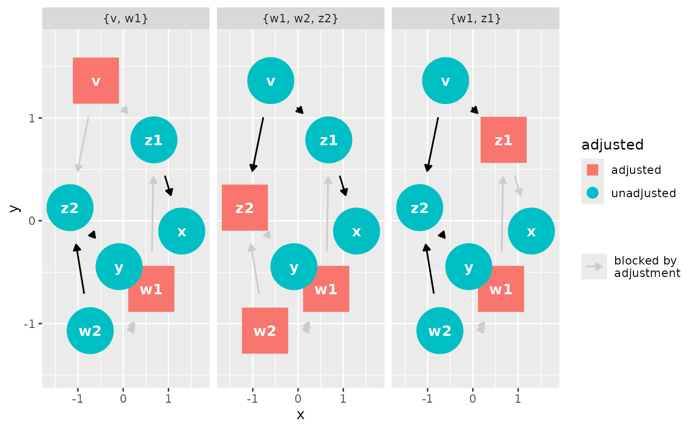
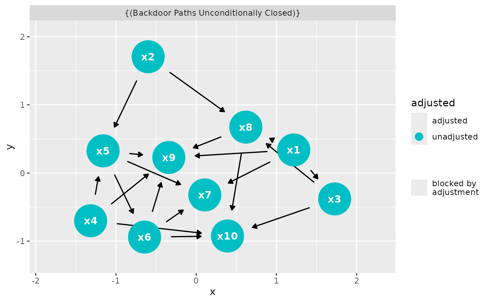

See dagitty::adjustmentSets() for details.
Usage
dag_adjustment_sets(.tdy_dag, exposure = NULL, outcome = NULL, ...)
ggdag_adjustment_set(
.tdy_dag,
exposure = NULL,
outcome = NULL,
...,
shadow = TRUE,
size = 1,
node_size = ggdag_option("node_size", 16),
text_size = ggdag_option("text_size", 3.88),
label_size = ggdag_option("label_size", text_size),
text_col = ggdag_option("text_col", "white"),
label_col = ggdag_option("label_col", "black"),
edge_width = ggdag_option("edge_width", 0.6),
edge_cap = ggdag_option_proportional("edge_cap", 8, 10),
arrow_length = ggdag_option("arrow_length", 5),
use_edges = ggdag_option("use_edges", TRUE),
use_nodes = ggdag_option("use_nodes", TRUE),
use_stylized = ggdag_option("use_stylized", FALSE),
use_text = ggdag_option("use_text", TRUE),
use_labels = ggdag_option("use_labels", FALSE),
label_geom = ggdag_option("label_geom", geom_dag_label_repel),
unified_legend = TRUE,
key_glyph = draw_key_dag_point,
label = NULL,
text = NULL,
edge_engine = ggdag_option("edge_engine", "ggraph"),
node = deprecated(),
stylized = deprecated(),
expand_x = expansion(c(0.25, 0.25)),
expand_y = expansion(c(0.2, 0.2))
)Arguments
- .tdy_dag
A
tidy_dagittyordagittyobject- exposure
A character vector, the exposure variable. Default is
NULL, in which case it will be determined from the DAG.- outcome
A character vector, the outcome variable. Default is
NULL, in which case it will be determined from the DAG.- ...
additional arguments to
adjustmentSets- shadow
logical. Show paths blocked by adjustment?
- size
A numeric value scaling the size of all elements in the DAG. This allows you to change the scale of the DAG without changing the proportions.
- node_size
The size of the nodes.
- text_size
The size of the text.
- label_size
The size of the labels.
- text_col
The color of the text.
- label_col
The color of the labels.
- edge_width
The width of the edges.
- edge_cap
The size of edge caps (the distance between the arrowheads and the node borders).
- arrow_length
The length of arrows on edges.
- use_edges
A logical value. Include a
geom_dag_edges*()function? IfTRUE, which is determined byedge_type.- use_nodes
A logical value. Include
geom_dag_point()?- use_stylized
A logical value. Include
geom_dag_node()?- use_text
A logical value. Include
geom_dag_text()?- use_labels
A logical value. Include a label geom? The specific geom used is controlled by
label_geom.- label_geom
A geom function to use for drawing labels when
use_labels = TRUE. Default isgeom_dag_label_repel. Other options includegeom_dag_label,geom_dag_text_repel,geom_dag_label_repel2, andgeom_dag_text_repel2.- unified_legend
A logical value. When
TRUEand bothuse_edgesanduse_nodesareTRUE, creates a unified legend entry showing both nodes and edges in a single key, and hides the separate edge legend. This creates a single, more compact legend. Default isTRUE.- key_glyph
A function to use for drawing the legend key glyph for nodes. If
NULL(the default), the glyph is chosen automatically based on theunified_legendsetting. When provided, this overrides the automatic selection. Common options includedraw_key_dag_point,draw_key_dag_combined, anddraw_key_dag_collider.- label
The bare name of a column to use for labels. If
use_labels = TRUE, the default is to uselabel.- text
The bare name of a column to use for
geom_dag_text(). Ifuse_text = TRUE, the default is to usename.- edge_engine
The engine used to draw edges. Either
"ggraph"(default) or"ggarrow". When"ggarrow", edges are drawn using ggarrow geoms, which support additional customization via thearrow_head,arrow_fins,arrow_mid, andcurvatureglobal options (seeggdag_options_set()).- node
Deprecated.
- stylized
Deprecated.
- expand_x, expand_y
Vector of range expansion constants used to add some padding around the data, to ensure that they are placed some distance away from the axes. Use the convenience function
ggplot2::expansion()to generate the values for the expand argument.
Value
a tidy_dagitty with an adjusted column and set
column, indicating adjustment status and DAG ID, respectively, for the
adjustment sets or a ggplot
Edge layers of the composite plotters
The plotters that color or fade edges by an analysis column build their edge
layers themselves, and which layers they build is settled from the DAG they
are called with: a DAG with no bidirected edge is given no bidirected edge
layer. Replacing the data of the returned plot afterwards, with ggplot2's
%+%, does not bring a layer back, so a plot built for one DAG is not a
template for another.
Examples
dag <- dagify(
y ~ x + z2 + w2 + w1,
x ~ z1 + w1,
z1 ~ w1 + v,
z2 ~ w2 + v,
w1 ~ ~w2,
exposure = "x",
outcome = "y"
)
tidy_dagitty(dag) |> dag_adjustment_sets()
#> # DAG:
#> # A `dagitty` DAG with: 7 nodes and 11 edges
#> # Exposure: x
#> # Outcome: y
#> # Adjustment sets: 3 sets: {w1, w2, z2}, {v, w1}, {w1, z1}
#> #
#> # Data:
#> # A tibble: 36 × 9
#> name x y direction to xend yend adjusted set
#> <chr> <dbl> <dbl> <fct> <chr> <dbl> <dbl> <chr> <chr>
#> 1 v -0.631 1.36 -> z1 0.659 0.796 unadjusted {w1, w2, z2}
#> 2 v -0.631 1.36 -> z2 -1.17 0.104 unadjusted {w1, w2, z2}
#> 3 w1 0.633 -0.658 -> x 1.29 -0.0707 adjusted {w1, w2, z2}
#> 4 w1 0.633 -0.658 -> y -0.0837 -0.441 adjusted {w1, w2, z2}
#> 5 w1 0.633 -0.658 -> z1 0.659 0.796 adjusted {w1, w2, z2}
#> 6 w1 0.633 -0.658 <-> w2 -0.700 -1.09 adjusted {w1, w2, z2}
#> 7 w2 -0.700 -1.09 -> y -0.0837 -0.441 adjusted {w1, w2, z2}
#> 8 w2 -0.700 -1.09 -> z2 -1.17 0.104 adjusted {w1, w2, z2}
#> 9 x 1.29 -0.0707 -> y -0.0837 -0.441 unadjusted {w1, w2, z2}
#> 10 y -0.0837 -0.441 NA NA NA NA unadjusted {w1, w2, z2}
#> # ℹ 26 more rows
#> #
#> # ℹ Use `pull_dag() (`?pull_dag`)` to retrieve the DAG object and `pull_dag_data() (`?pull_dag_data`)` for the data frame
ggdag_adjustment_set(dag)

ggdag_adjustment_set(
dagitty::randomDAG(10, 0.5),
exposure = "x3",
outcome = "x5"
)
